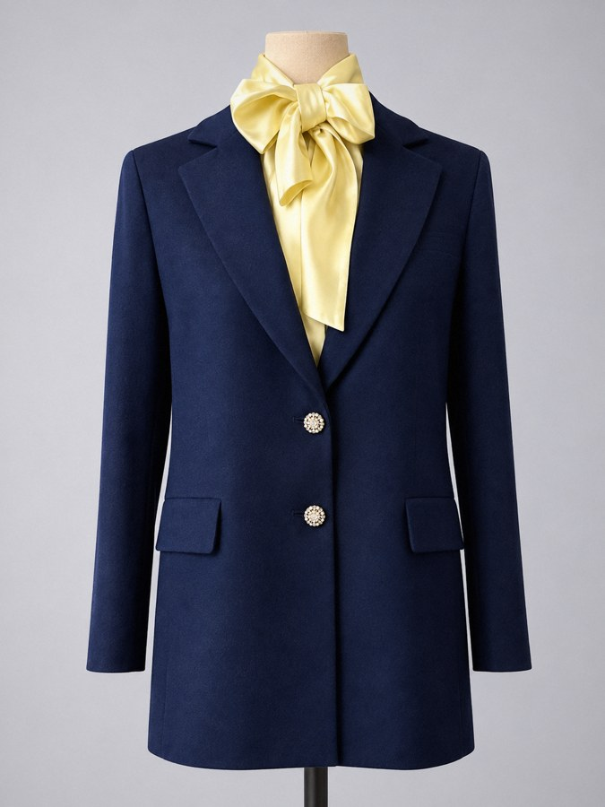

AVANT
SEN OsloDressen som endelig passer
KlyoGi eksisterende materialer nytt liv
Paris Haute Couture Fashion WeekAnerkjent av Taraji P. Henson
Fra redaksjonen
Featured Edit
Første utgave er her. Vi har møtt to små norske merker med hver sin måte å lage klær på: SEN Oslo, med dresser som i år ble brukt på Paris Haute Couture Fashion Week, og Klyo, som gir eksisterende materialer nytt liv.
Featured Edit er AVANTs digitale magasin for små og nye norske motemerker. Vi møter menneskene bak, ser hvordan plaggene blir til, og samler det de har lært på veien. Bildene fra besøket hos SEN Oslo har vi tatt selv, og de er digitalt bearbeidet.
I denne utgaven
- 01SEN OsloDressen som endelig passer · ca. 3 min
- 02KlyoGi eksisterende materialer nytt liv · ca. 4 min
RedaksjonenAVANT · Oslo

Nr. 01 · Designer story
SEN
Oslo
Dressen som endelig passer
Hos Sheila Brox sys hver dress for hånd, til én person om gangen. I år ble SEN-dresser brukt på Paris Haute Couture Fashion Week. Der ble dressen anerkjent av Taraji P. Henson.
Les SEN Oslo-featuren
Nr. 02 · Designer story
Klyo
Gi eksisterende materialer nytt liv
Kulani Premadasa redesigner duker, gardiner og overskuddsmaterialer til nye plagg.
Les Klyo-featuren«Start med det du har, lær underveis og jobb videre mot drømmen din.»
Kolofon
Featured Edit Nr. 01
- Utgave
- 01 · Høst 2026
- Redaksjon
- AVANT, Oslo
- Tekst
- AVANT. Intervjusvar: Kulani Premadasa
- Foto, SEN Oslo
- AVANT (besøket). Produktfoto: Sheila Brox / SEN Oslo
- Foto og video, Klyo
- Klyo / Kulani Premadasa
- Bildebehandling
- Bildene fra SEN Oslo er digitalt bearbeidet
- Utgiver
- Et studentprosjekt fra BI Oslo
Ditt merke her?
Vi leter etter neste norske merke
Lager du klær eller tilbehør i Norge og vil bli vist frem av unge skapere? Send oss en melding, så tar vi en prat.